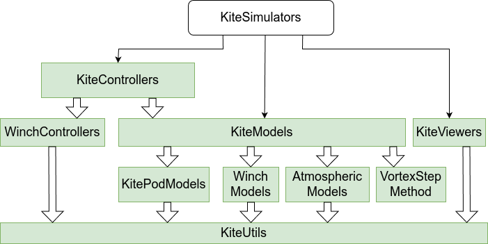
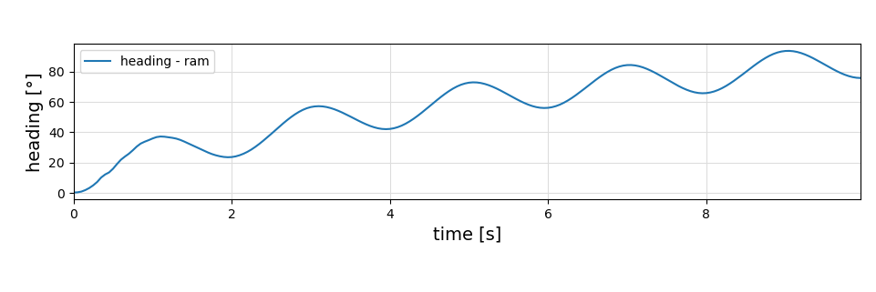
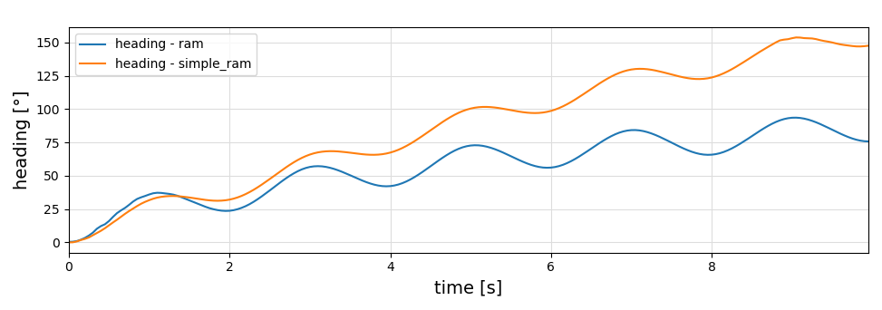

SymbolicAWEModels
Documentation for the package SymbolicAWEModels.
This package provides modular symbolic models of Airborne Wind Energy (AWE) systems, which consist of one or more wings, tethers, winches and a bridle system with or without pulleys. The kite is modeled as a deforming rigid body with orientation governed by quaternion dynamics. The aerodynamic forces and moments are computed using the Vortex Step Method. The tether is modeled as point masses connected by spring-damper elements, with aerodynamic drag modeled realistically. The winchs are modeled as motors/generators that can reel in or out the tethers.
The SymbolicAWEModel has the following subcomponents implemented in separate packages:
- AtmosphericModel from AtmosphericModels
- WinchModel from WinchModels
- The aerodynamic forces and moments of some of the models are calculated using the package VortexStepMethod
This package is part of the Julia Kite Power Tools, which consist of the following packages:

Quick Start
Install Julia using juliaup, if you haven't already:
curl -fsSL https://install.julialang.org | sh
juliaup add release
juliaup default releaseFor most users (installing from the registry):
mkdir my_kite_project
cd my_kite_project
julia --project="."Then add SymbolicAWEModels and copy examples:
using Pkg
pkg"add SymbolicAWEModels"
using SymbolicAWEModels
SymbolicAWEModels.init_module() # Copies examples and installs dependenciesRun the examples:
include("examples/menu.jl") # Interactive menu
# or
include("examples/ram_air_kite.jl") # Specific exampleNote: The first run will be slow (several minutes) due to compilation. Run a second time for much faster performance.
For developers or cloned package users, see the detailed Getting Started Guide which explains the different workflows for:
- Registry users (most common)
- Cloned package users
- Package developers
The guide also includes instructions for building documentation locally.
Ram air kite model
This model represents the kite as a deforming rigid body, with orientation governed by quaternion dynamics. Aerodynamics are computed using the Vortex Step Method. The kite is controlled from the ground via four tethers.
Initialize:
using SymbolicAWEModels
set = Settings("system.yaml")
sam = SymbolicAWEModel(set, "ram")
init!(sam)Simulate:
(log, _) = sim_oscillate!(sam)For visualization, load GLMakie to automatically enable the plotting extension:
using GLMakie
plot(sam.sys_struct, log; plot_default=false, plot_heading=true)See the Examples page for more details on plotting options.

The simple_ram model removes the bridle system, and has 1-segment tethers. The tether properties and attach points can be approximated using the complex ram air kite model and a helper tether model. This makes the heading response of the simple model very close to the heading response of the complex model.
Initialize:
init!(sam)
tether_sam = SymbolicAWEModel(set, "tether")
init!(tether_sam)
simple_sam = SymbolicAWEModel(set, "simple_ram")
init!(simple_sam)Simulate:
SymbolicAWEModels.copy_to_simple!(sam, tether_sam, simple_sam)
(simple_log, _) = sim_oscillate!(simple_sam)Visualize (requires GLMakie):
using GLMakie
plot(simple_sam.sys_struct, simple_log; plot_default=false, plot_heading=true)
See also
- Research Fechner for the scientic background of the winches and tethers.
- More kite models KiteModels
- The meta-package KiteSimulators
- the package KiteUtils
- the packages WinchModels and KitePodModels and AtmosphericModels
- the packages KiteControllers and KiteViewers
- the VortexStepMethod
Questions?
If you have any questions or problems, please submit an issue or start a discussion. The Julia community is also very helpful: Julia Discourse. You can also send an email to Bart van de Lint (bart@vandelint.net).
Authors: Bart van de Lint (bart@vandelint.net), Uwe Fechner (uwe.fechner.msc@gmail.com)